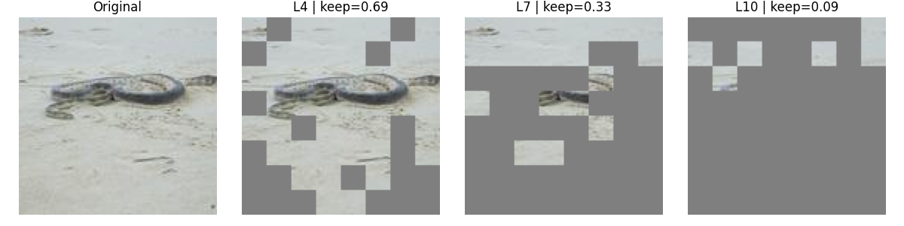

Vit-Pytorch: Custom Implementation of Vision Transformers and Dynamic Vision Transformers
This repository contains our PyTorch implementation of Vision Transformers (ViT) and Dynamic Vision Transformers (DynamicViT) for datasets such as ImageNet and CIFAR-10.

DynamicViT was originally proposed in:
“Dynamic Vision Transformers for Efficient Image Recognition”, CVPR 2022 arXiv link. Our code is an independent implementation, including some modifications for adaptive pruning and efficient training on ImageNet with small teachers.
Table of Contents
Installation
- Clone the repository:
git clone <repo_url>
cd Vit-Pytorch- Install dependencies using
uv(optional):
pip install uv
uv pip install -r pyproject.toml- Activate virtual environment:
source .venv/bin/activateNote: Using
uvandpyproject.tomlis cleaner thanrequirements.txt.
Project Structure
models/: Contains ViT and DynamicViT architectures, transformers, patch embedding, and predictor modules.data/: Data loaders for ImageNet and CIFAR-10.configs/: Training configuration files for ImageNet and CIFAR.training/: Scripts to train teacher and student models.testing/: Scripts to evaluate models and generate plots.helper_function/: Utility functions (printing, plotting, etc.).
How It Works
Vision Transformer (ViT)
- Splits input images into patches and embeds them (
d_model). - Adds positional encoding.
- Processes embeddings with a stack of transformer encoders.
- The CLS token summarizes the image for classification.
- Outputs logits via a linear classification head.
- Trained with standard cross-entropy loss.
Dynamic Vision Transformer (DynamicViT)
Extends ViT with dynamic token pruning to reduce FLOPs and memory usage.
Each layer predicts which tokens can be pruned in deeper layers.
Adaptive pruning ratio (
rho):- Follows a sigmoid schedule during training.
- Early epochs: few tokens are pruned, allowing robust feature learning.
- Later epochs: more tokens are pruned, increasing efficiency.
- Enables training DynamicViT on ImageNet even with a small teacher model.
Loss function combines:
- Classification loss
- Knowledge distillation from teacher
- KL divergence
- Ratio loss (enforces target keep ratio per layer)
Only unpruned tokens are passed through deeper layers; CLS token is always kept.
Usage
Training Teacher
python -m training.train_teacher_imagenetTraining Student (DynamicViT)
python -m training.train_student_imagenetMake sure to adjust
log_dirandcheckpoint_dirin config files to avoid overwriting previous results.
Testing / Evaluation
python -m testing.test_imagenet
python -m testing.test_cifarRunning Unit Tests
python -m pytest tests/ -v
python -m pytest -v tests/test_Vit/test_attention_head.pyVisualization
- Training & validation loss and accuracy curves.
- Confusion matrices for teacher and student.
- Per-class accuracy comparison.
- Visualization of pruning masks on input images.
Citation
If you use this implementation, please cite our repository and refer to the original DynamicViT paper:
@article{DBLP:journals/corr/abs-2106-02034,
author = {Yongming Rao and
Wenliang Zhao and
Benlin Liu and
Jiwen Lu and
Jie Zhou and
Cho{-}Jui Hsieh},
title = {DynamicViT: Efficient Vision Transformers with Dynamic Token Sparsification},
journal = {CoRR},
volume = {abs/2106.02034},
year = {2021},
url = {https://arxiv.org/abs/2106.02034},
eprinttype = {arXiv},
eprint = {2106.02034},
timestamp = {Thu, 10 Jun 2021 16:34:18 +0200},
biburl = {https://dblp.org/rec/journals/corr/abs-2106-02034.bib},
bibsource = {dblp computer science bibliography, https://dblp.org}
}